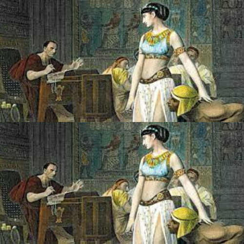
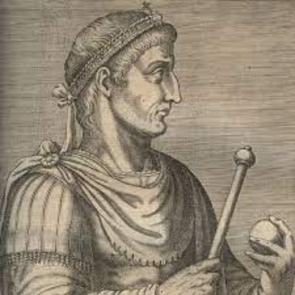
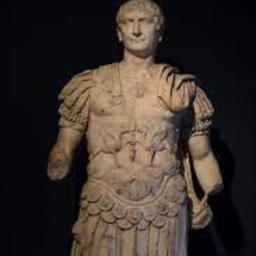

Welcome to my blog, where you'll find info about arguably the best time of the Roman Empire, the period of the first and second triumvirates which kickstarted the Pax Romana.
Also, you'll find out more info about the greatest emperors to have ruled over the Roman Empire after Octavian took power and became the first Roman Emperor.
Now sit back, take some popcorn, and enjoy the info on this blog!!!
About me
You can acces the "About me" page by using the following link: About me
Form page
You can access the "Form Page" by using the following link: Form Page
The First Triumvirate, By 'unknown author', posted on 4/1/2024
The First Triumvirate was possibly the superior of its succesor. It was formed after the last Servile War during which Crassus managed to defeat Spartacus and our dear Pompeii came to mop up the last of the rebels
At first it went great, Caesar managed to keep the senate busy through the support he had from his 2 allies back in Rome. However as his popularity grew due to his conquests in Gaul and Britain Crassus viewed him with suspicion and envy and went in Parthia to conquer lands for some much needed glory. It didn't go well for him...got ambushed in the deserd, lost much of his army + conquests + his own son and was eventually handed over by his soldiers to the enemy general to be brutally executed (he had molten gold poured down his throat, pretty gruesome if you ask me).
As for Pompeii, Caesa's daughter (or niece) was married to him, thus having his loyalty assured until she died giving birth to a son (the kid died shortly after). Due to his grief, he eventually came to his senses and eventually started a civil war with Caesar. Long story short, it didn't go well. He had to flee to Egypt as a result where he tried to gather up some support there and got decapitated by the ruling Pharaoh, whose name I've pretty much forgotten.
Caesar, being the last surviving member of the Triumvirate and keeping with tradition, died in a gruesome fashion too, aka he was stabbed to death by the senate due to him getting to much power and being manipulated by Cleopatra (that sneaky bi***). His wife tried to warn him btw, he didn't listen and look how he ended up. Always listen to your wives fellas.
The Second Triumvirate, By 'unknown author', posted on 4/1/2024
The Second Triumvirate, while not being as good as its predecessor (and virtually being a shit show all things considered), it played an instrumental role in cementing the rule of Octavian and thus putting an end to the Roman Republic and starting the Roman Empire.
It all started with Anthony hunting down his own fellow conspirators after Caesar's death and assuming power in Rome as the next dictator. He tried to subvert Octavian, who was pretty much Caesar's legitimate successor and thus a threat to his plans. Didn't succed and was forced to come to a compromise, thus splitting the Roman territories in 2. The Western half of the Roman territories to Octavian, and the Eastern Half to Anthony.
An uneasy peace started, and lasted until Anthony publicly divorced his own wife back in Rome (who was Octavian's sister/cousin) in favour of his lover, Cleopatra (who pretty much had ambitions to eventually rule Rome through her son Cesarion). Octavian couldn't have that, went to war with his former ally, beat him both at sea and in the field and eventually Anthony died of his wounds.
As for Octavian, he became the first Emperor pretty much. He eventually lost his mind when he lost 3 legions in the Teutoborg forest in Germania but, overall, he did his job well and kickstarted an Empire that would last for centuries.
The last guy from this whole arrangement isn't even worth mentioning since he played a small role in all this.
Cleopatra, By 'unknown author', posted on 4/1/2024
The queen of Egypt, Cleopatra managed to manipulate famous men such as Gaius Julius Caesar and Mark Anthony through her charms and intellect and almost managed to gain control of half the Roman Empire. Too bad her fleet went up in smokes in the end and she had to kill herself.
Oh and btw, the son that Cleopatra has with Caesar, Caesarion, would eventually be hunted down and murdered. Unlike Mark Anthony's children who survived and were given to his wife back in Rome to raise (Mark divorced her for Cleopatra btw, plus the children weren't even hers).
For more info on this subject, access the following link: 
Marcus Aurelius, By 'unknown author', posted on 4/1/2024
Marcus Aurelius Antoninus, born on April 26, 121, and dying on March 17, 180, was a Roman emperor from 161 to 180 and a Stoic philosopher. He marked the end of the Five Good Emperors and the Pax Romana, a period of peace in the Roman Empire lasting until his death. Aurelius was raised in a noble family, closely connected to the emperors Trajan and Hadrian, and became heir to the throne after a series of adoptions following his father's death when he was three. His reign as emperor, alongside his adoptive brother Lucius Verus, saw military conflicts, including successful battles against the Parthian Empire and the Marcomannic Wars, but also faced internal challenges like the Antonine Plague, which killed millions. Marcus Aurelius is noted for not appointing an heir from outside his family, leading to his son Commodus's controversial succession. Despite increased persecution of Christians during his reign, evidence suggests he was not actively involved. Aurelius's writings, known as "Meditations," offer profound insights into Stoic philosophy and have been highly regarded throughout history. His legacy includes the Column and Equestrian Statue of Marcus Aurelius in Rome, celebrating his military achievements.
For more information on his life access the following link:
Constantine, By 'unknown author', posted on 4/1/2024
Constantine I, known as Constantine the Great (c. 272–337 AD), was the first Roman emperor to convert to Christianity and played a crucial role in its promotion within the Roman Empire. His reign marked the end of Christian persecution and initiated the Constantinian shift, a period where Christianity was decriminalized and began to intertwine with the state, leading to the establishment of Constantinism, which advocated for the unity of church and state. He founded Constantinople, positioning it as the new capital of the Roman Empire.
Born in Naissus, in present-day Serbia, to an Illyrian Roman army officer and a Greek woman of humble origin, Constantine rose to power after his father's death in 306, eventually becoming the sole ruler after defeating rivals Maxentius and Licinius. His reforms fortified the empire through administrative, military, and monetary restructuring, including the introduction of the solidus coin. He also resettled areas deserted during previous crises, bolstering Rome’s frontiers against barbarian invasions.
Constantine's religious conversion is noted for its impact on the Christian Church, particularly through his sponsorship of the Edict of Milan in 313, which granted religious tolerance throughout the empire, and his convening of the First Council of Nicaea in 325. Despite living much of his life as a pagan, his late conversion to Christianity—shortly before his death—was a significant turning point for the religion's status in the empire. He is revered as a saint in Eastern Christianity and left a lasting legacy on both the church and the state.
Constantine's establishment of Constantinople as a new imperial residence marked a pivotal shift in the Roman Empire’s center of power, influencing its cultural and political landscape for over a millennium. His rule symbolized a transition from classical antiquity to the Middle Ages, embedding his figure as a paragon of virtue in medieval thought and as a symbol of imperial legitimacy. His legacy, while complex and sometimes contested in modern scholarship, underscores his critical role in shaping the Byzantine Empire and Christian history.
For more information on this guy's life click on the following link please: 
Trajan, By 'unknown author', posted on 4/1/2024
Trajan, Roman emperor from AD 98 to 117 and the second of the Five Good Emperors, led Rome to its greatest territorial size and was honored as optimus ('the best') by the Senate. Born in Italica, Spain, he rose to power with a distinguished military career and was adopted by Emperor Nerva. His reign saw significant expansions, including annexations in the Middle East and Dacia, and notable civic projects like Trajan's Forum. Trajan's policies also included social welfare initiatives. He died in 117 and was deified, with his ashes placed beneath Trajan's Column in Rome.
Trajan saw more long term success in Dacia, rather than Messopotamia, since while the holdings in Dacia would persist for more than a century, those in Messopotamia would evaporate as soon as he started to live. He died somewhere in Messopotamia btw.
For more information on this guy's life click on the following link please: 